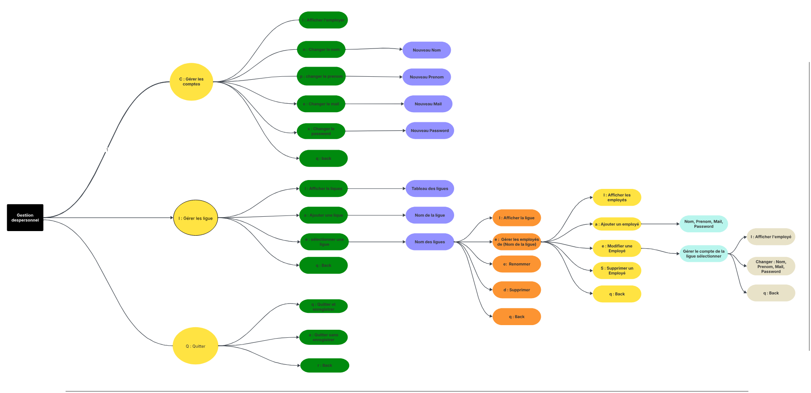
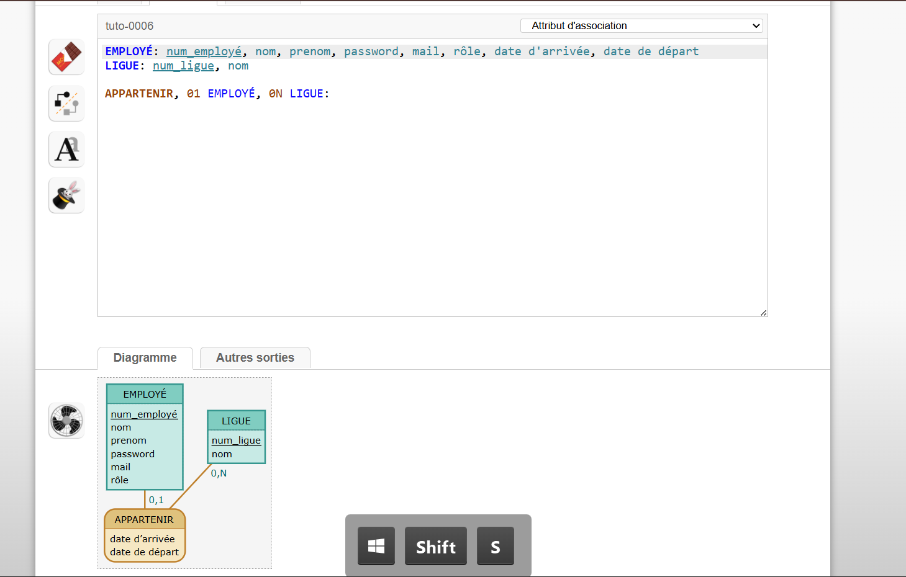
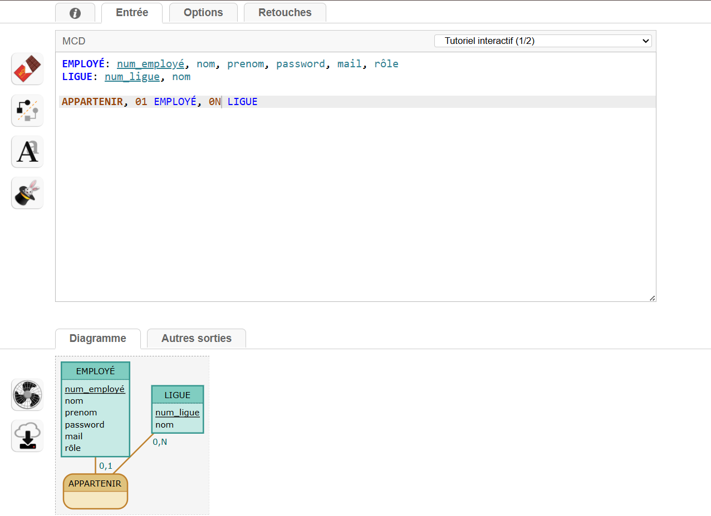

Contexte du Projet
La Maison des Ligues de Lorraine (M2L) héberge plusieurs ligues sportives et souhaite moderniser
la gestion de leurs employés. L'application initiale était mono-utilisateur et fonctionnait uniquement
en ligne de commande avec sérialisation fichier.
Mission : Transformer l'application pour supporter plusieurs utilisateurs simultanés
avec différents niveaux de droits, tout en conservant l'architecture 3-tiers existante.
Ressources Fournies vs. Travail Réalisé
Ce qui était fourni
- Code source initial : Classes
Employe, Ligue, GestionPersonnel avec sérialisation fichier
- Architecture 3-tiers : Séparation présentation (commandLine) / métier (personnel) / données (passerelle)
- Bibliothèque CLI : Framework pour construire des menus en ligne de commande
- Système mono-utilisateur : Un seul utilisateur "root" pouvait gérer toutes les ligues
Ce que j'ai développé
1. Ajout de la gestion des dates d'arrivée/départ
Implémentation de LocalDate date_arrivee et date_depart dans la classe
Employe avec validation (la date de départ ne peut pas être antérieure à l'arrivée).
2. Amélioration de l'interface CLI
Modification de LigueConsole pour permettre la saisie des dates lors de l'ajout d'un employé.
Ajout d'options de sélection et modification d'employés.
3. Validation des données métier
Ajout de IllegalArgumentException pour empêcher la création d'employés avec des dates incohérentes
(départ avant arrivée, dates null).
4. Préparation pour multi-utilisateurs
Refactorisation du code pour préparer l'intégration future d'une base de données MySQL via
l'interface Passerelle (JDBC).
Java 17
Langage principal
Eclipse IDE
Environnement de dev
Serialization
Persistance actuelle
JDBC (prévu)
Migration future vers BDD
Architecture cible
Le système doit supporter trois profils utilisateurs :
| Rôle |
Droits |
Périmètre |
| Employé Simple |
Lecture seule (consultation annuaire) |
Toutes les ligues |
| Administrateur de Ligue |
Lecture + Écriture (CRUD employés) |
Sa ligue uniquement |
| Super-Administrateur (Root) |
Accès total + Gestion des comptes admin |
Toutes les ligues |
Implémentation actuelle : Le système gère déjà le concept de root
(super-utilisateur) et d'administrateur de ligue. La vérification se fait via les méthodes
estRoot() et estAdmin(Ligue ligue).
Extraits de Code Significatifs
1. Validation des Dates dans le Constructeur
J'ai ajouté une logique métier stricte pour empêcher la création d'employés avec des dates incohérentes :
// Employe.java (constructeur)
Employe(GestionPersonnel gestionPersonnel, Ligue ligue,
String nom, String prenom, String mail, String password,
LocalDate date_arrivee, LocalDate date_depart)
{
this.gestionPersonnel = gestionPersonnel;
this.nom = nom;
this.prenom = prenom;
this.password = password;
this.mail = mail;
this.ligue = ligue;
// ✅ VALIDATION DES DATES (mon ajout)
if (date_arrivee == null || date_depart == null) {
throw new IllegalArgumentException(
"Les dates d'arrivée et de départ sont obligatoires");
}
if (date_depart.isBefore(date_arrivee)) {
throw new IllegalArgumentException(
"La date de départ ne peut pas être antérieure à la date d'arrivée");
}
this.date_depart = date_depart;
this.date_arrivee = date_arrivee;
}
2. Gestion des Droits d'Administration
Le système vérifie qu'un employé peut devenir administrateur uniquement s'il appartient à la ligue
ou s'il est le root :
// Ligue.java
public void setAdministrateur(Employe administrateur)
{
Employe root = gestionPersonnel.getRoot();
// Seul le root ou un employé de la ligue peut être admin
if (administrateur != root && administrateur.getLigue() != this)
throw new DroitsInsuffisants();
this.administrateur = administrateur;
}
3. Vérification du Statut (Root / Admin / Employé)
Deux méthodes clés permettent de distinguer les profils utilisateurs :
// Employe.java
// Vérifie si l'employé est le super-utilisateur
public boolean estRoot()
{
return gestionPersonnel.getRoot() == this;
}
// Vérifie si l'employé est admin d'une ligue donnée
public boolean estAdmin(Ligue ligue)
{
return ligue.getAdministrateur() == this;
}
4. Ajout d'un Employé avec Dates (Interface CLI)
Modification de LigueConsole.java pour permettre la saisie des dates :
// LigueConsole.java
private Option ajouterEmploye(final Ligue ligue)
{
return new Option("ajouter un employé", "a", () ->
{
String nom = getString("nom : ");
String prenom = getString("prenom : ");
String mail = getString("mail : ");
String password = getString("password : ");
// SAISIE DES DATES (mon ajout)
LocalDate dateArrivee = LocalDate.parse(
getString("date d'arrivée (yyyy-MM-dd) : ")
);
LocalDate dateDepart = LocalDate.parse(
getString("date de départ (yyyy-MM-dd) : ")
);
ligue.addEmploye(nom, prenom, mail, password,
dateArrivee, dateDepart);
});
}
5. Suppression Sécurisée d'un Employé
Si l'employé supprimé est administrateur, le root récupère automatiquement ses droits :
// Employe.java
public void remove()
{
Employe root = gestionPersonnel.getRoot();
if (this != root)
{
// Si cet employé est admin, le root reprend les droits
if (estAdmin(getLigue()))
getLigue().setAdministrateur(root);
getLigue().remove(this);
}
else
throw new ImpossibleDeSupprimerRoot();
}
Captures d'Écran de l'Application
Abre heuristique

Menu principal accessible au super-utilisateur (root)
MCD 1

Options de gestion d'une ligue
MCD 2

Formulaire d'ajout d'un employé avec validation des dates
Difficultés Rencontrées & Solutions
1. Gestion des Dates avec LocalDate
Problème : Au départ, je ne savais pas comment valider qu'une date de départ soit postérieure
à la date d'arrivée.
Solution : J'ai découvert la méthode isBefore() de LocalDate qui permet
de comparer deux dates facilement. J'ai placé cette validation dans le constructeur ET dans les setters pour garantir
la cohérence des données.
2. Respect de l'Architecture 3-Tiers
Problème : Au début, j'étais tenté d'accéder directement aux attributs des employés depuis
LigueConsole pour aller plus vite.
Solution : J'ai compris l'importance de passer par les méthodes métier (getters/setters) pour
respecter l'encapsulation. Cela facilitera la migration vers JDBC car seule la couche Données changera.
3. Compréhension du Pattern Passerelle
Problème : Je ne comprenais pas à quoi servait l'interface Passerelle et pourquoi
le code avait Serialization.java ET JDBC.java.
Solution : J'ai réalisé que c'est un design pattern qui permet de changer de système de persistance
(fichier → BDD) sans modifier le code métier. La constante TYPE_PASSERELLE dans GestionPersonnel
permet de basculer entre les deux.
4. Exception lors de la Suppression du Root
Problème : Le code lève une exception ImpossibleDeSupprimerRoot mais je ne savais pas
où la gérer dans l'interface CLI.
Solution : J'ai laissé l'exception se propager jusqu'au niveau présentation. Dans une version future,
il faudrait ajouter un try-catch pour afficher un message utilisateur convivial.
Compétences Mobilisées (Référentiel BTS SIO)
-
B1.1 - Recherche de solutions techniques :
Recherche sur l'API LocalDate (méthodes parse(), isBefore()).
Compréhension du pattern Passerelle pour l'abstraction de la persistance.
-
B1.2 - Développement d'une solution applicative :
Modification de classes existantes (Employe, LigueConsole) en respectant
les conventions de nommage et la Javadoc. Utilisation de IllegalArgumentException pour
la validation métier.
-
B1.3 - Conception et adaptation de structures de données :
Ajout d'attributs (date_arrivee, date_depart) avec préservation de la
sérialisation (serialVersionUID). Utilisation de SortedSet pour le tri automatique.
-
B1.4 - Programmation objet :
Respect de l'encapsulation (attributs privés, accès via getters/setters). Implémentation de
Comparable<Employe> pour le tri. Compréhension du pattern Singleton
(GestionPersonnel).
-
B1.5 - Gestion des données :
Préparation du passage à une base de données relationnelle via l'interface Passerelle.
Compréhension de la contrainte CHECK SQL pour valider les dates.
Évolutions Futures Prévues
-
Migration vers MySQL :
Implémentation complète de JDBC.java avec requêtes préparées (PreparedStatement)
pour éviter les injections SQL.
-
Hashage des mots de passe :
Actuellement, les passwords sont stockés en clair. Il faut utiliser BCrypt ou
PBKDF2 pour les hasher avant stockage.
-
Interface graphique (Swing) :
Création d'une GUI pour remplacer l'interface CLI, plus intuitive pour les administrateurs de ligue.
-
Tests unitaires (JUnit) :
Ajouter des tests pour valider la logique de validation des dates et les droits d'administration.
-
Gestion de l'historique :
Actuellement, on peut modifier les dates d'un employé. Il faudrait créer une table
Historique_Affectation pour tracer tous les changements.
Bilan & Apprentissages
Ce projet m'a permis de travailler sur du code existant, une compétence essentielle
en entreprise. Plutôt que de repartir de zéro, j'ai dû :
- Comprendre l'architecture existante avant de modifier le code
- Respecter les conventions déjà en place (nommage, Javadoc, structure des packages)
- Anticiper les évolutions futures (migration vers BDD) en gardant le code flexible
- Valider les données métier dès la couche objet pour garantir la cohérence
Compétence clé acquise : J'ai compris qu'en POO, la validation des données ne doit
PAS se faire uniquement dans l'interface utilisateur, mais dans les classes métier
(constructeurs, setters). Cela garantit que les données restent cohérentes même si on change d'interface
(CLI → GUI → API REST).
Durée du projet : 2mois et 2 semaines
Lignes de code ajoutées/modifiées : ~150 lignes
Fichiers modifiés : Employe.java, LigueConsole.java, Ligue.java